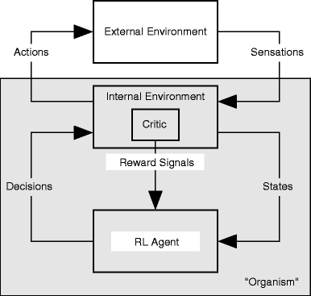
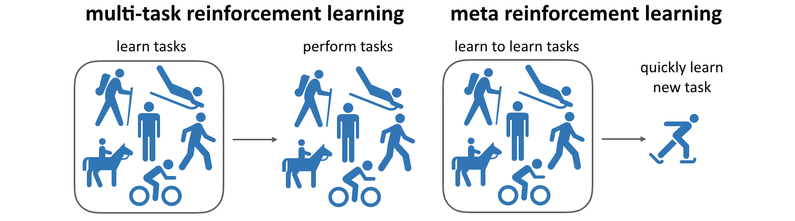
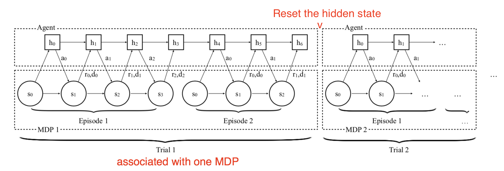
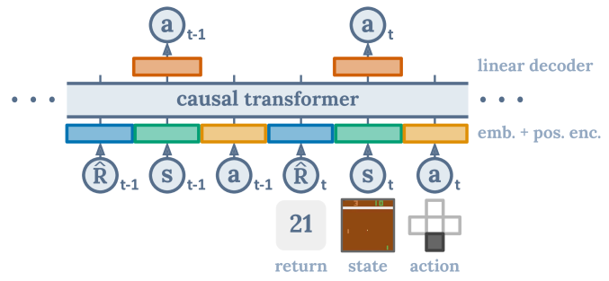

Deep Reinforcement Learning
Outlook
Overview of deep RL methods

Overview of deep RL methods

Model-free methods (DQN, A3C, DDPG, PPO, SAC) are able to find optimal policies in complex sequential decision-making problems (MDPs) by just sampling transitions: blackbox optimizer.
They suffer however from a high sample complexity, i.e. they need ridiculous amounts of samples to converge.
Model-based methods (I2A, Dreamer, MuZero) use learned dynamics to predict the future and plan the consequences of an action.
The sample complexity is lower, but learning a good model can be challenging. Inference times can be prohibitive.

Deep RL is still very unstable
Depending on initialization, deep RL networks may or may not converge (30% of runs converge to a worse policy than a random agent).
Careful optimization such as TRPO / PPO help, but not completely.
You never know if failure is your fault (wrong network, bad hyperparameters, bug), or just bad luck.

RL libraries
rllibis part of the more global ML framework Ray, which also includes Tune for hyperparameter optimization.
It has implementations in both tensorflow and Pytorch.
All major model-free algorithms are implemented (DQN, Rainbow, A3C, DDPG, PPO, SAC), including their distributed variants (Ape-X, IMPALA, TD3) but also model-based algorithms (Dreamer!)
https://docs.ray.io/en/master/rllib.html

Inverse Reinforcement Learning

The goal of inverse RL is to learn from demonstrations (e.g. from humans) which reward function is maximized.
This is not imitation learning, where you try to learn and reproduce actions.
The goal if to find a parametrized representation of the reward function:
\hat{r}(s) = \sum_{i=1}^K w_i \, \varphi_i(s)
- When the reward function has been learned, you can train a RL algorithm to find the optimal policy.
Intrinsic motivation and curiosity
- One fundamental problem of RL is its dependence on the reward function.

When rewards are sparse, the agent does not learn much (but see successor representations) unless its random exploration policy makes it discover rewards.
The reward function is handmade, what is difficult in realistic complex problems.
Human learning does not (only) rely on maximizing rewards or achieving goals.
Especially infants discover the world by playing, i.e. interacting with the environment out of curiosity.
- What happens if I do that? Oh, that’s fun.
This called intrinsic motivation: we are motivated by understanding the world, not only by getting rewards.
Rewards are internally generated.

Intrinsic motivation and curiosity
What is intrinsically rewarding / motivating / fun? Mostly what has unexpected consequences.
If you can predict what is going to happen, it becomes boring.
If you cannot predict, you can become curious and try to explore that action.

- The intrinsic reward (IR) of an action is defined as the sensory prediction error:
\text{IR}(s_t, a_t, s_{t+1}) = || f(s_t, a_t) - s_{t+1}||
where f(s_t, a_t) is a forward model predicting the sensory consequences of an action.
- An agent maximizing the IR will tend to visit unknown / poorly predicted states (exploration).
Intrinsic motivation and curiosity
Is it a good idea to predict frames directly?
Frames are highly dimensional and there will always be a remaining error.

- Moreover, they can be noisy and unpredictable, without being particularly interesting.
- What can we do? As usual, predict in a latent space!
Intrinsic curiosity module (ICM)
The intrinsic curiosity module (ICM) learns to provide an intrinsic reward for a transition (s_t, a_t, s_{t+1}) by comparing the predicted latent representation \hat{\phi}(s_{t+1}) (using a forward model) to its “true” latent representation \phi(s_{t+1}).
The feature representation \phi(s_t) is trained using an inverse model predicting the action leading from s_t to s_{t+1}.

Meta-Learning Shared Hierarchies
Sub-policies (options) can be trained to solve simple tasks (going left, right, etc).
A meta-learner or controller then learns to call each sub-policy when needed, at a much lower frequency.

Meta RL: Learning to learn
- Meta learning is the ability to reuse skills acquired on a set of tasks to quickly acquire new (similar) ones (generalization).


Meta RL: Learning to learn

Meta RL is based on the idea of fast and slow learning:
Slow learning is the adaptation of weights in the NN.
Fast learning is the adaptation to changes in the environment.
A simple strategy developed concurrently by (Wang et al. 2016) and (Duan et al. 2016) is to have a model-free algorithm (e.g. A3C) integrate with a LSTM layer not only the current state s_t, but also the previous action a_{t-1} and reward r_t.
The policy of the agent becomes memory-guided: it selects an action depending on what it did before, not only the state.

Behavioral cloning
As no exploration is allowed, the model is limited by the quality of the data: if the acquisition policy is random, there is not much to hope.
If we have already a good policy, but slow or expensive to compute, we could try to transfer it to a fast neural network.
If the policy is a human expert, it is called learning from demonstrations (lfd) or imitation learning.
The simplest approach to offline RL is behavioral cloning: simply supervised learning of (s, a) pairs…

Decision transformer
Transformers are the new SotA method to transform sequences into sequences.
Why not sequences of states into sequences of actions?
The decision transformer takes complete offline trajectories as inputs (s, a, r, s…) and predicts autoregressively the next action.
